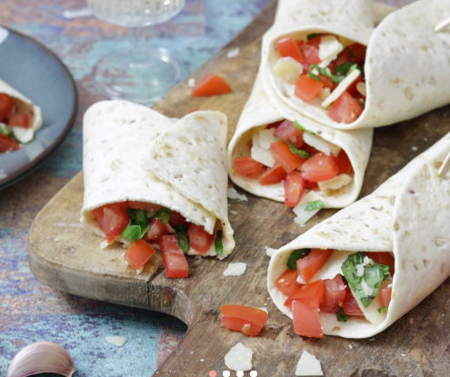

voorgerecht
hoofdgerecht
nagerecht
Bruschetta wraps
Snel en lekker, dat zijn deze bruschetta wraps. In plaats van de combinatie tomaat, knoflook en basilicum op een stokbroodje te serveren, stoppen wij het in een wrap.
Ingrediënten
- 4 tomaten
- 1 teentje knoflook
- 15 g verse basilicum
- 4 (meergranen)wraps
- 75 g Parmezaanse kaas
Bereidingswijze
- Snijd de tomaten in kwarten en verwijder de zaadlijsten. Snijd het vruchtvlees in kleine blokjes.
- Doe de tomatenblokjes in een kom en pers de knoflook hierover met een knoflookpers.
- Voeg een eetlepel olijfolie toe en roer het geheel goed door.
- Snijd de basilicum fijn en voeg dit toe aan de tomaten. Meng alles goed door elkaar en breng op smaak met zout en peper.
- Verwarm de meergranen wraps zoals aangegeven op de verpakking. Bedek ze met het bruschetta mengsel.
- Verdeel de Parmezaanse kaas over de wraps en rol ze stevig op.
